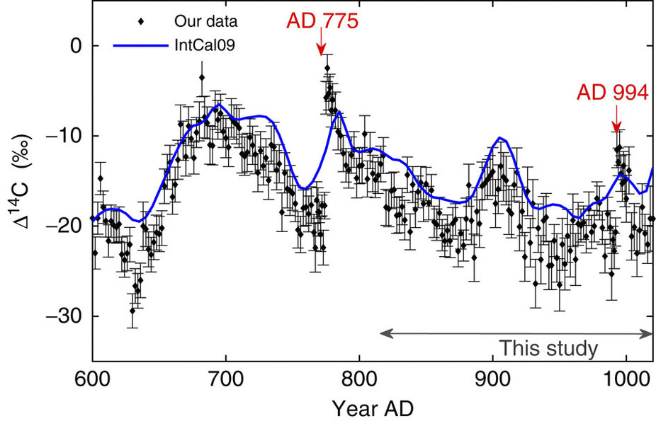
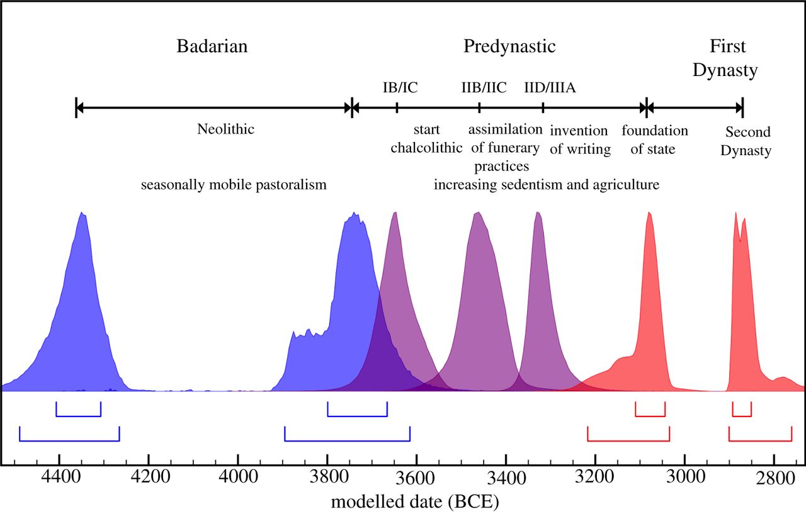
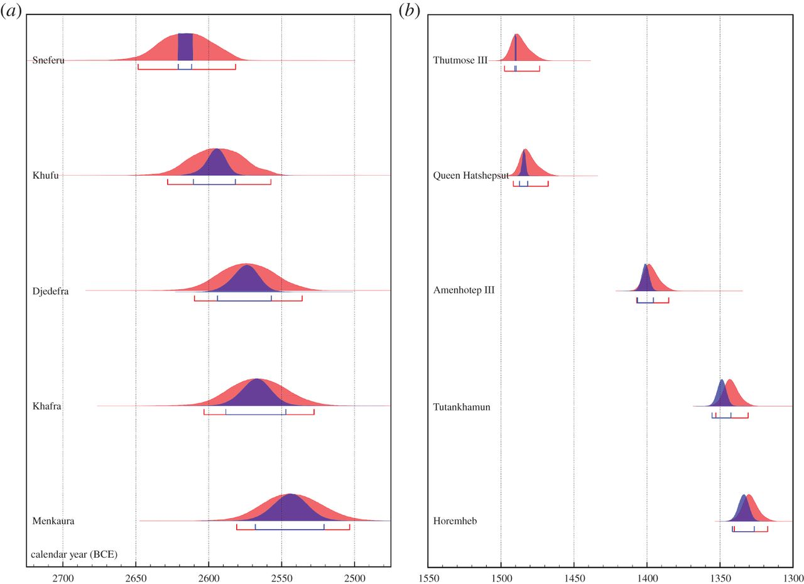
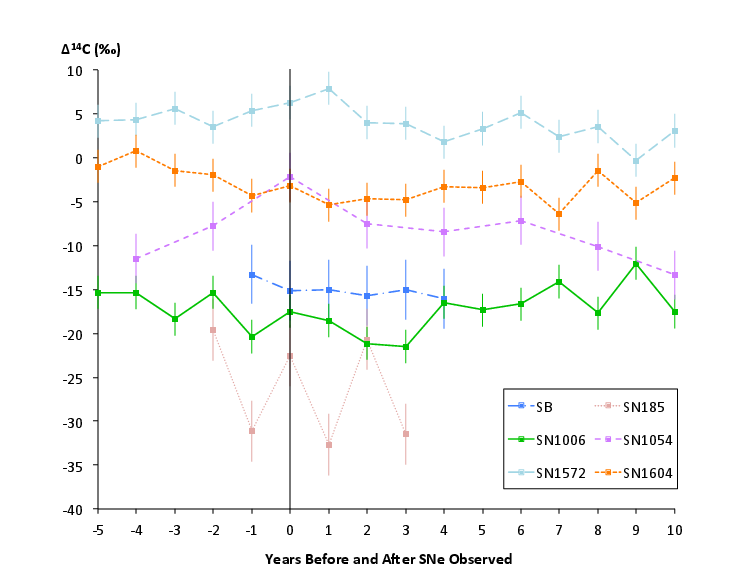
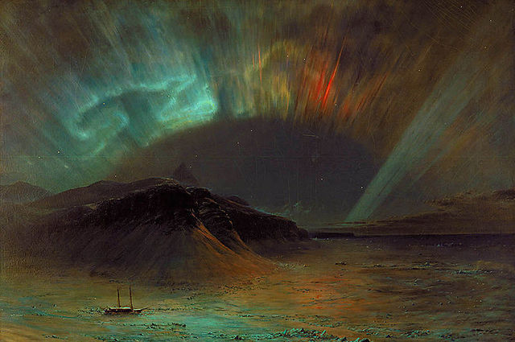
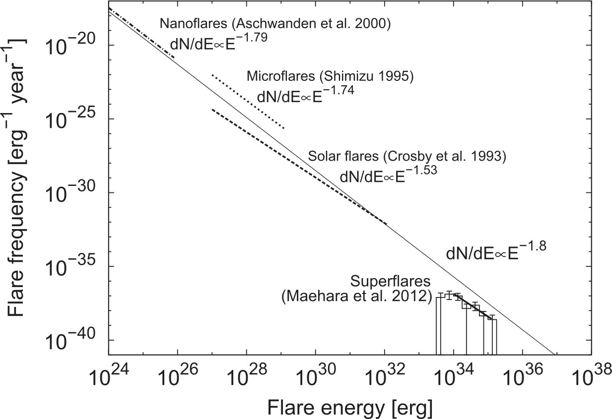
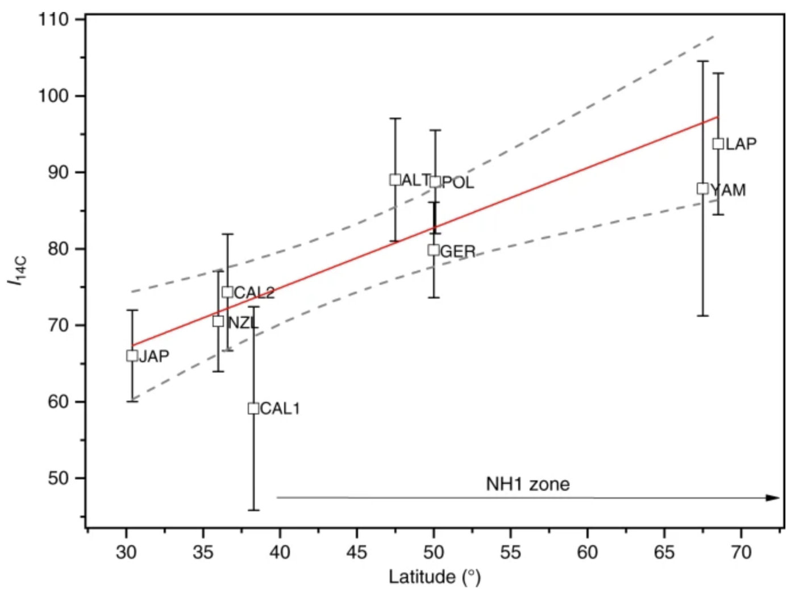
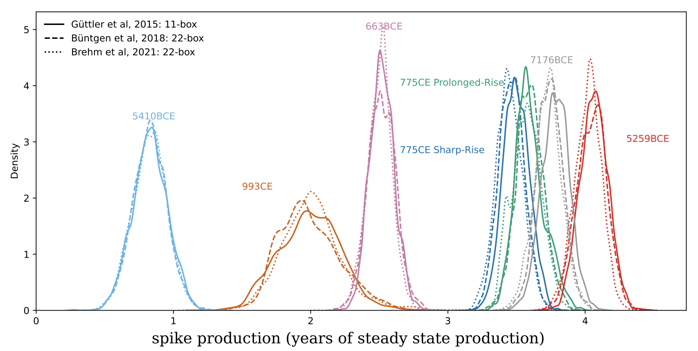
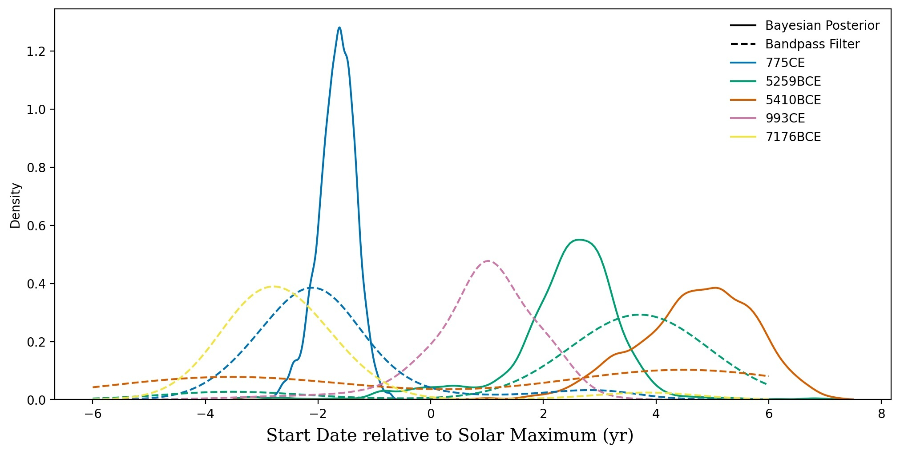

Extreme Events
in the Radiocarbon Record
Miyake Events
774-775 AD

Miyake et al, 2012
Anglo-Saxon Chronicle: 774 AD
“This year also appeared in the heavens a red crucifix, after sunset; the Mercians and the men of Kent fought at Otford; and wonderful serpents were seen in the land of the South-Saxons.”
Allen, 2012
Also in 993-994 AD
Miyake et al, 2013
Comparison

Miyake et al, 2013
Ancient Egypt
Uncertain chronology
Dee et al., 2013
Solved by Miyake events?
Dee et al., 2016A
Vikings in North America!
Leif Eriksson, 'Leif the Lucky' from Iceland, landed in Vínland far to the West around 1000 AD.
Was this North America? Ruins at L'Anse aux Meadows in Newfoundland consistent with this!
Dated to 1021 CE by tree rings containing the 993 event!
So what is the physics?
Supernovae?
No!
Dee, Pope et al., 2016a
Magnetars?
Connection to fast radio bursts?

The Sun
Carrington Event
F.E. Church, "Aurora Borealis", 1865.
Superflares in Kepler

Maehara et al., 2012
Superflares vs. the Sun
Shibata et al., 2013
Cause still unknown!
Open-Source Software
To model these time series, you have to model the entire global carbon cycle!

Archaeologists adapt carbon 'box models' from geoscience/climate models, with systems of transport equations between carbon reservoirs
eg this model from Güttler et al, 2015

The problem is, none of the work in the field is reproducible! All these carbon box models are closed-source.
But we want to do astrophysics - infer event amplitudes, durations...
Working with Utkarsh Sharma, Qingyuan Zhang & Jordan Dennis
Built open-source Python package
Features:
- Literature carbon box models
- Built on Google Jax for autodiff + speed
- Multiple, fast (~10ms) numerical and analytic ODE solvers
- Nonparametric inverse solvers, using GPs or an exact ODE inverse
- MCMC and Nested Sampling support for Bayesian parameter inference
Students are leading a paper in prep applying this to all known Miyake events!
Example Posterior Draws

Example Posterior Distribution

Uusitalo et al, 2018 claim trend with latitude
With more data we find no trend

Amplitude of the events - equivalent years
Relation to the solar cycle

And using a less precise method...
The Future
Upcoming projects...
Injection-recovery tests!